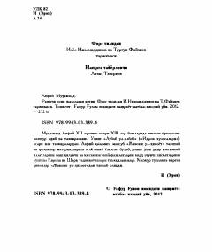

VVMuhammad Avfiyning "Javomi ul-hikoyot" asaridan saralangan ibratli hikoyalar to'plami.
Mazkur to'plam XII-XIII asrlarda yashab ijod etgan mashhur adib va tazkirashunos Muhammad Avfiyning " Javomi ul-hikoyot" asaridan saralab olingan hikoyalarni o'z ichiga oladi. Kitobda turli hayotiy voqealar, axloqiy fazilatlar va Sharq xalqlarining ijtimoiy-ma'rifiy hayotiga oid qissalar bayon etilgan. Asar tarjimonlar I. Nizomiddinov va T. Fayziyev tomonidan nashrga tayyorlangan.